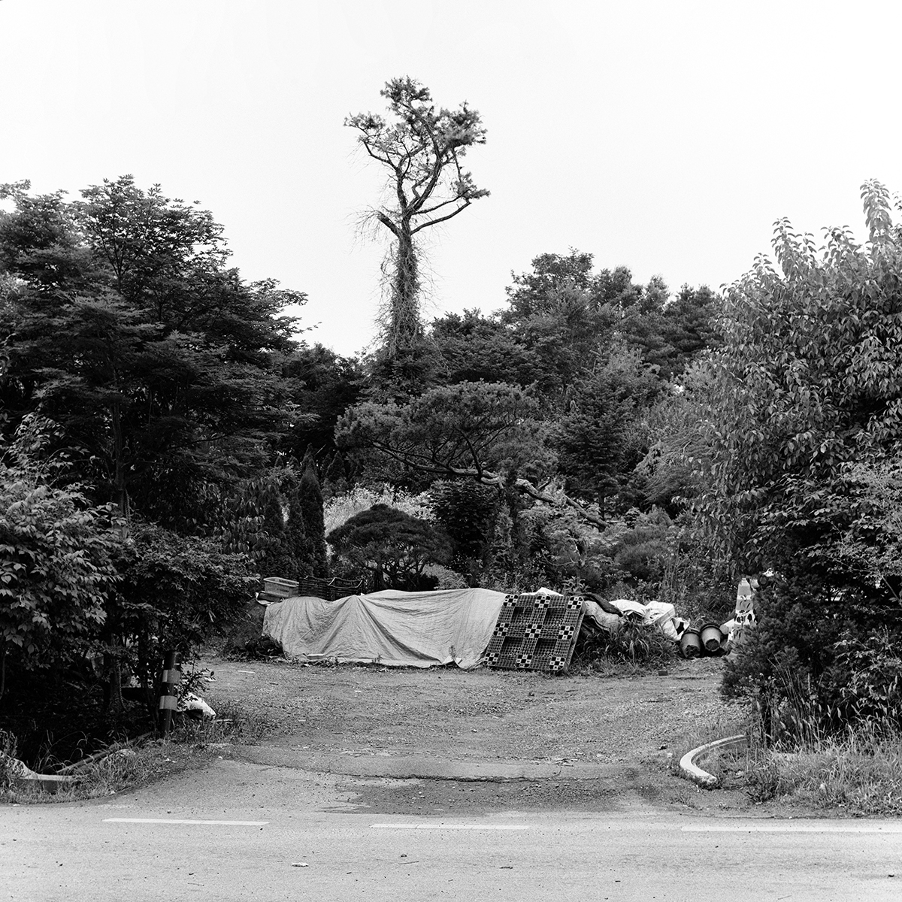

김민준
b.1996
사진, 영상 등 다양한 시각매체를 통해 보이는 것을 기록하고,
나아가 보이지 않는 것까지 이끌어 내는 작업을 하고자 한다.
이미지와 얽혀 있는 파편적으로 흩어진 이야기를 추적, 수집하여 재구성해 이미지화한다.
이미지로 결합된 내러티브를 통해 사회와의 연결고리를 만들어 내고 지속적으로 질문을 던진다.
학력
- 계원예술대학교 융합예술과 재학
- 계원예술대학교 사진예술과 졸업
그룹전
- 충무로 갤러리, <21회 사진비평상 수상사진>, 2024
- YART Gallery, <모서리 한 발 서기>, 2024
- 전주국제사진제 <자유발언展>, 2023
- Gallery the C, <Space>, 2023
선정 및 수상
- 21회 사진비평상 작품상, 2024
- 경기문화재단, <경기젊은작가 Young Blood>, 2023
소장
- 경기문화재단